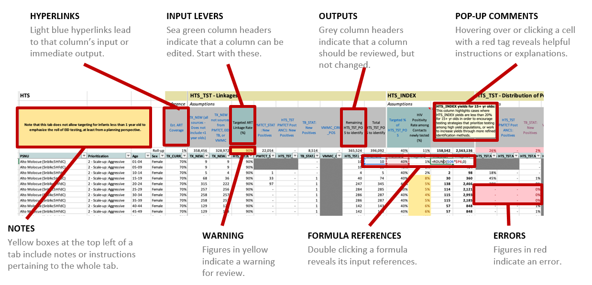
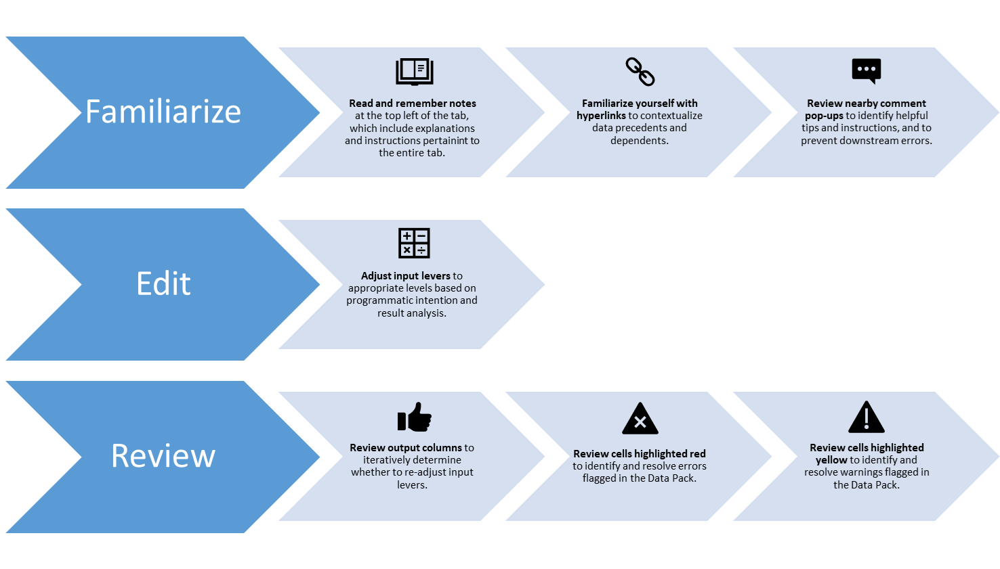

1 COP22 DataPack Overview
Welcome to the COP22 DataPack User Manual. The following pages aim to provide users of the DataPack with the information necessary to successfully complete each tab of the DataPack tool and determine accurate, data-driven targets. For the past several years, the DataPack has a been a key element of PEPFAR COP planning, and for COP22 serves a critical function in assisting PEPFAR Country Teams in setting targets in line with the UNAIDS 95-95-95 goals for Testing, Care & Treatment, PMTCT, VMMC, OVC, and other program areas. Please note that the COP22 DataPack is mandatory and must be used to set targets for COP22. For COP22, all indicators included in the DataPack are MER 2.6 indicators. For further information on the MER 2.6 indicators, please go to https://datim.zendesk.com/hc/en-us/sections/200929315-MER.
1.1 About the DataPack
The COP22 DataPack supports analysis for all targets by Priority Subnational Unit (PSNU), population, and Implementing Mechanism (IM). This tool supports calculation of targets based on expected treatment coverage rates by type of PSNU and population prioritization:
Attained
Scale-up: Aggressive
Scale-up: Saturation
Sustained
Prioritizations for PSNUs are arebased on COP Guidance section 7.3.2.ba. These determine for a given PSNU programmatically what HIV treatment and prevention services should be planned and informs both the overall strategy and the targets. Teams must review and revise their PSNU prioritization levels for COP22. The COP22 DataPack assumes a ‘test and start’ treatment platform and will develop targets for achieving 95% coverage in Scale up: Aggressive and Scale-up: Saturation PSNUs; all other targets in the DataPack are based on the treatment targets, insofar as the treatment targets are the main focus of reaching epidemic control, and therefore relate to both testing and prevention targets.
The DataPack will allow PEPFAR teams to use country specific programmatic assumptions to develop the optimum targets by PSNU along the program cascades to ensure the necessary number of PLHIV are diagnosed, linked, and start treatment. The DataPack does not necessarily calculate targets for every indicator, but it has space for teams to enter targets for all indicators and thus can be used to record agreed-upon COP targets, even for non-calculated indicators.
Teams must not modify the structure of the COP22 DataPack in any way. The Office of the US Global Aids Coordinator (OGAC) has developed a process by which targets can be directly imported into DATIM via the DataPack Site Tool in order to generate targets. However, this is only possible for teams that do not in any way alter the structure or format of the DataPack. Additional details are provided in COP Guidance and will be available through COP webinars.
1.2 Highlighted Changes from COP21 to COP22
The COP22 DataPack is largely the same as the COP21 DataPack. However, please note the following updates that have been implemented as a result of multiple feedback sessions with various country teams that had been identified by the PRIME team, as well as new programmatic changes that are reflected in the Section 7 of COP guidance. These changes revolve around workflow, ease of target setting, and linkage to the COP guidance based on different aspects of the DataPack that worked well and others that did not during COP21 target stetting:
New Cascade Approach that will flow from Program Viral Load Suppression to testing to allow for countries closer or at Epi Control to more easily set targets, based on Section 7 of COP22 Guidance.
Integration of new SNS Modalities for HTS and HTS_Recent.
Targets will no longer be set for PrEP_CURR, but instead will be set for a replacement indicator of PrEP_CT.
50+ finer age bands across the clinical cascade. These will be aggregated to 50+ upon DATIM import for all but TX_CURR.
PSNUxIM tab structure that will again handle de-duplication and IM allocation.
1.3 Data Flow and Review Process to COP22 Submission
The results from APR20 have been taken from DATIM and used to populate the DataPack. In turn, the DataPack targets will produce FY22 targets that will be subsequently submitted through DATIM after COP22 has been finalized and the PSNU level data entered into the Strategic Direction Summary (SDS) tables, where appropriate (Target related data).
DataPack Review
| Single OU Track: Group 1 | Single OU Track: Group 2 | Single OU Track: Group 3 | OUs at Epi Control | Regional/ Country Pair Track | |
|---|---|---|---|---|---|
| 1st Draft Tool Submission | Feb 28 | Mar 7 | Mar 14 | Mar 7 or Mar 14 | Feb 28 |
| COP Meeting | Mar 7-11 | Mar 14-18 | Mar 22-25 | Mar 14-18 or Mar 22-25 | Mar 22-25 |
| Mid-point Tool Check | |||||
| Tools Due for Final Review | Apr 4 | Apr 11 | Apr 18 | Apr 11 or Apr 18 | Apr 18 |
| Additional Touchpoints/ Reviews | Rolling Each Monday | ||||
| Tools Submitted for Upload to | Apr 11 | Apr 18 | Apr 25 | Apr 18 or Apr 23 | Apr 25 |
| COP21 Submission Due | Apr 19 | Apr 22 | Apr 29 | Apr 22 or Apr 29 | Apr 29 |
Submission Process
For each of the below submissions, the following process will occur:
Country Teamspre-validates their DataPack submission in the DataPack Self-Service App (available at https://apps.datim.org/datapack/).
Country Team uses DataPack Self-Service App to sync data with PAW Dossiers.
Country Team saves DataPack to SharePoint under the OU’s HQ Collaboration > COP 2022 - FY 2023 > Guidance, Tools, and Resources folder.
Country Team submits a ticket in ZenDesk that includes:
A link to the DataPack file saved in SharePoint
Confirmation that this file has been pre-validated in the DataPack Self-Service App
Confirmation that this file has been sent to PAW via the DataPack Self-Service App
In copy: Chair, PPM, assigned DUIT Liaison, and any Interagency members that should be aware of ongoing review and discussions.
Once this ticket is received, the DataPack Support Team will confirm all the above has occurred and send additional instructions as needed
The PPM reviews the ticket/email thread and confirms the correct individuals have all been copied.
The assigned PPM and the assigned DUIT Liaison use both the DataPack Self-Service App and the PAW COP Dossiers to validate and review the DataPack, noting any feedback in the ticket/email thread.
The assigned Chair should also review all feedback on the ticket thread and any additional comments as needed.
As is possible, all the above should occur within a 24 hour turnaround from the initial submission of a DataPack from a Country Team. While this process will remain the same for each submission for review, the content of each review will differ, as explained below. Once a Zendesk ticket and email thread has been started with an initial DataPack submission, all future DataPack submissions related to the same Country should use the same thread/ticket to allow for easy coordination.
Submission 1
Validate high-level strategic planning direction aligns with the vision set by the PLL.
Highlight any areas for technical assistance.
Ensure construction of DataPack has not been tampered with.
For this stage of review, it is not expected that your PSNUxIM tab be completed or even populated. At this stage, the focus should be on ensuring the high-level cascade is strategically aligned, and only afterward proceeding to allocating targets to IMs. Note that this is also partly to avoid Excel performance issues that may occur with the addition of more data to the PSNUxIM tab.
Submission 2
Confirm resolution of any issues flagged during your first submission.
Confirm no discrepancies between targets modeled in your submitted DataPack and any COP Meeting presentations to date or other high-level discussions had with PPMs and Chairs.
Review the PSNUxIM tab and address issues related to IM and DSD-TA allocation, and deduplication.
Submission 3
Again confirm DataPack alignment with all high-level decisions and any final presentations given by the Country Team.
Confirm resolution of any issues flagged during the second submission.
Track down and resolve any last bugs and issues in seen in the DataPack
Confirm the DataPack is as near final as possible
Final Submission
Confirm all targets modeled in the DataPack are ready for submission to DATIM.
Secure Interagency Government sign-off for import of your submitted DataPack to DATIM.
Note authority to waive any lingering validation issues flagged by the DataPack Self-Service App.
Once approval by PPMs, Chairs, and Liaisons is documented on the Zendesk thread/ticket, the DataPack Support Team will move forward with uploading your submitted DataPack to DATIM, then note completion of this here on this ticket. Once this is done, it is recommended that you review your data in DATIM to ensure alignment between DATIM and your DataPack. Please note in addition to these regular formal submissions, we encourage regular sharing and dialogue with Chair, PPM, and DUIT Liaison around target setting process generally, and DataPack specifically. Feel free to share draft versions as often as is helpful.
1.5 Tab Categories
Each DataPack will start with 21 tabs organized in the order presented below. Upon downloading the DataPack, the PSNUxIM tab will appear as a blank sheet, but will be generated by the self-service validation app after you submit your preliminary DataPack.
Introduction
Home
Host Country Planning Data
Spectrum
Prioritization
DATIM MER 2.5 Indicator Data Elements
Cascade
PMTCT
EID
TB
VMMC
KP
HTS
CXCA
HTS_RECENT
TX_TB_PREV
PP
OVC
GEND
AGYW
PrEP
KP_MAT
KP Validation
Mechanism Mapping
PSNU x IM
1.6 How Does Everything Connect?

1.7 Elements of a Tab

1.8 How to Navigate a DataPack Tab

ENTERING DATA IN THE CORRECT SECTION
In the tabs for the DATIM Data Elements, sections may either have data prepopulated from DATIM or the user will enter data into that column. Each section of the guide will list what columns users can expect to have data prepopulated and / or where they can enter data themselves.
ENTERING DATA IN THE WRONG SECTION
If you enter data into a cell that you are not supposed to enter data into, you will receive the following message box with corrective action suggestions as well.
Example:

1.9 Adjustments to Historic Targets and Results
Throughout the DataPack, historic targets and results have been provided for reference and often to drive target modeling algorithms. If, in the process of reviewing these historic data, issues with the data are discovered that may need to be addressed in DATIM, follow the below procedure:
Raise specific issues with historic data to your PPM and DUIT Liaison. Determine together whether any issue identified requires updating values in DATIM.
It maybe that together with your PPM and DUIT Liaison you decide that changes to historic values are not necessary in DATIM, but still necessary in the DataPack. This is an extraordinary circumstance and must have approval from PRIME/DUIT leadership via your Liaison to allow. If approved, you may make changes directly in the related column of the DataPack.
If it is the case that DATIM values should be updated, follow the usual process for OPU Target changes, requesting all necessary approvals to initiate and expedite this process during COP.
Once changes are aprroved, either through an OPU for targets, or through data change request for results, you can enter the new values into the related column of the DataPack yourself. If you wish to request a new DataPack, you may do so, but will have to start the DataPack process afresh. For either of these routes, reach out to the DataPack Systems Team via Zendesk for support.